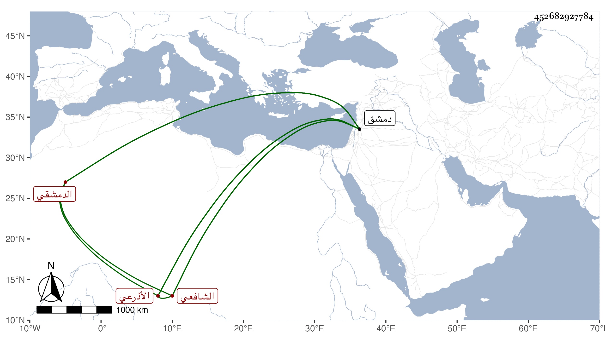

0902Sakhawi.DawLamic.ITO20230111-ara1.EIS1600.452682927784
Biography ID: 452682927784
49
أبو بكر بن أحمد بن سليمان بن داود بن أبي بكر التقي أبو الصدق بن الشهاب بن أبي الربيع الأذرعي ثم الدمشقي الشافعي . ولد سنة ثمان وتسعين وسبعمائة بدمشق ونشأ بها فحفظ كتبا واشتغل في فنون ومن شيوخه الشمس البرماوي وكان يحكي عنه في استشكال لاقرابه قريبه بتزويج النبي صلى الله عليه وسلم ابنته من علي رضي الله عنهما أنها ليست قريبة فإنها ابنة ابن عمه وكذا أخذ عن التقي بن قاضي شهبة بل شاركه في بعض شيوخه وسمع من عائشة ابنة ابن عبد الهادي جل الصحيح في سنة ثمان وثمانمائة وأجاز له الشهاب بن العماد الحسباني وناب في الحكم بدمشق وتصدى لنفع الطلبة فأخذ عنه الأماثل ودرس بالعادلية الصغرى وممن أخذ عنه الشمس محمد بن أحمد بن محمد بن محمد بن حامد المقدسي وكتب إلي بالإجازة ورأيته قرط تصنيف النجم بن قاضي عجلون في مسألة ذبائح أهل الكتاب بما أثبته في ترجمته في المعجم وكذا قرض لغيره وكان أحد أوعية العلم وأعيان النواب . مات فجأة في ليلة السبت سلخ ربيع الأول سنة ثمان وخمسين بدمشق وتوقف الناس في موته وزعم بعضهم أنه أسكت فأخر إلى يوم الأحد فلما تحقق موته غسل وصلى عليه بجامع دمشق وحمل حاجب الحجاب نعشه من منزله بالعادلية الصغرى إلى وسط الجامع ودفن بمقبرة الباب الشرقي وكانت جنازته حافلة بالأعيان رحمه الله وإيانا .
